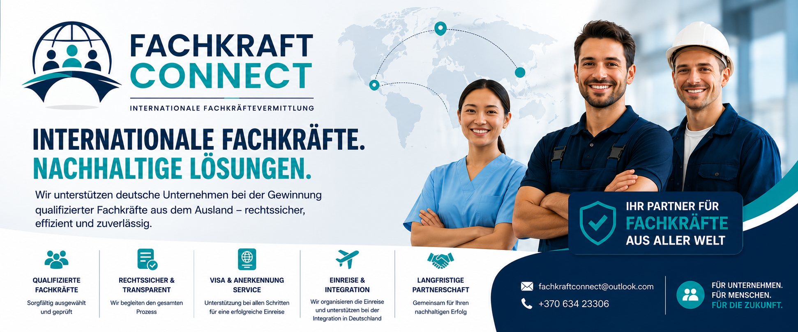

01
Fachkräfteauswahl
Wir suchen und vermitteln geeignete internationale Fachkräfte passend zu Ihrem Personalbedarf.
Wir unterstützen deutsche Unternehmen bei der Gewinnung qualifizierter Fachkräfte aus dem Ausland – strukturiert, zuverlässig und persönlich begleitet.

Von der Auswahl geeigneter Kandidatinnen und Kandidaten bis zur erfolgreichen Einreise begleiten wir den Prozess persönlich und transparent.
Wir suchen und vermitteln geeignete internationale Fachkräfte passend zu Ihrem Personalbedarf.
Unterstützung und Koordination bei den notwendigen Schritten rund um Visa und Anerkennungsverfahren.
Begleitung bei der Einreise und Unterstützung für einen guten Start in Deutschland.
Wir möchten nicht nur vermitteln, sondern langfristige und verlässliche Partnerschaften aufbauen.
Sie teilen uns Ihre offene Position und Anforderungen mit.
Wir suchen passende Fachkräfte und stellen geeignete Profile vor.
Interviews, Abstimmung und vertragliche Schritte werden koordiniert.
Die erforderlichen Prozesse werden strukturiert begleitet.
Wir begleiten die Ankunft und den erfolgreichen Start in Deutschland.
Ob Handwerk, Produktion, Logistik, Pflege oder andere Fachbereiche: Besprechen Sie mit uns Ihren konkreten Personalbedarf.
Kostenloses ErstgesprächFachkraft Connect steht für internationale Fachkräftevermittlung mit persönlicher Betreuung. Unser Ziel ist es, deutsche Unternehmen und qualifizierte Menschen aus dem Ausland nachhaltig zusammenzubringen.
Wir setzen auf klare Kommunikation, sorgfältige Auswahl und eine Begleitung, die über die reine Vermittlung hinausgeht.
Schreiben Sie uns oder rufen Sie direkt an. Wir besprechen unverbindlich Ihren Bedarf.